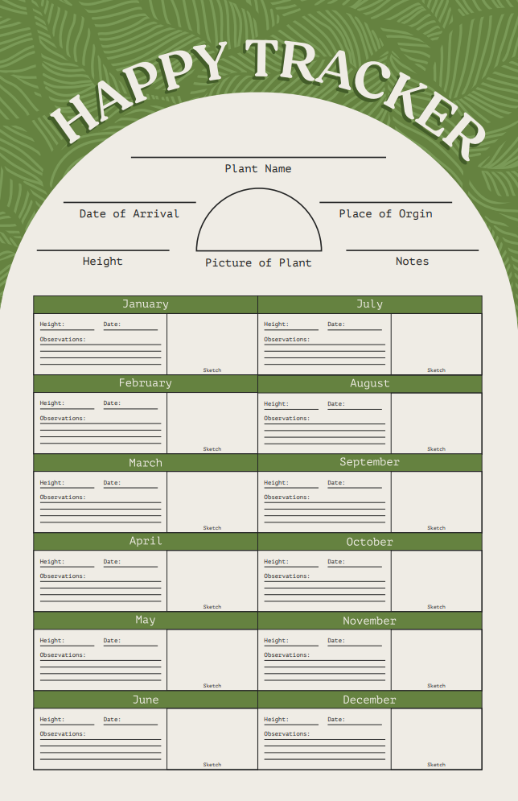
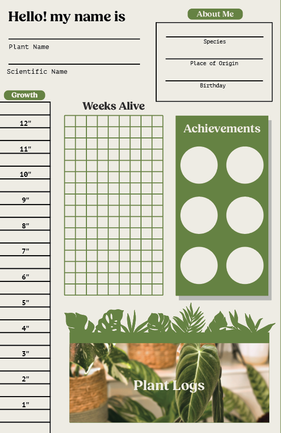
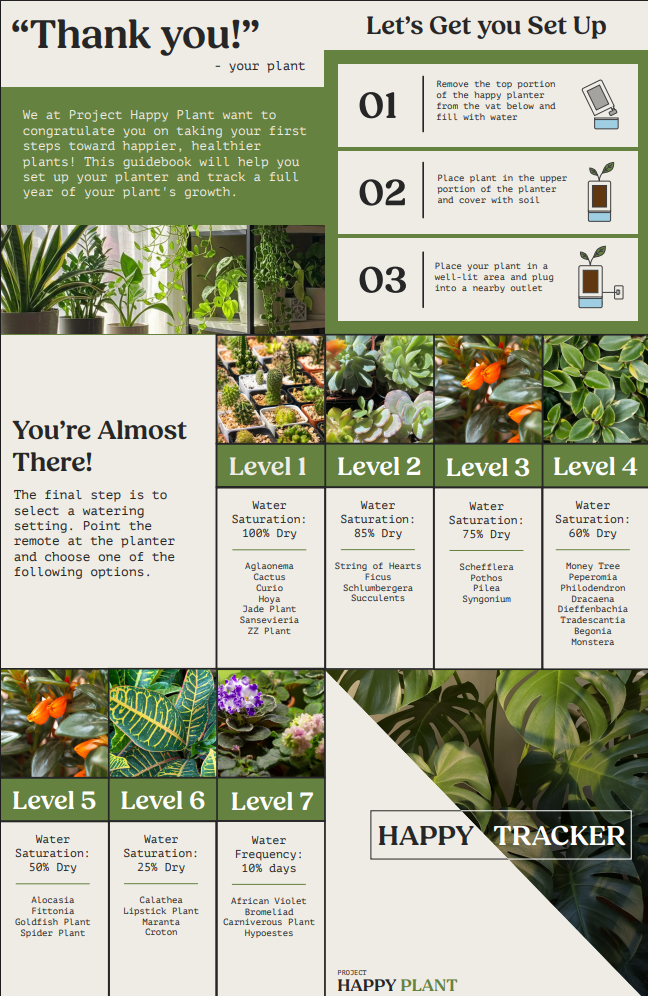
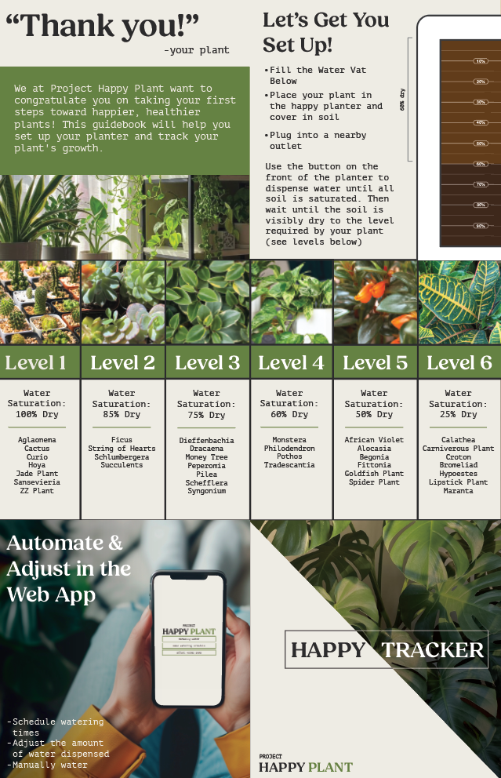

Happy Tracker Prototypes
The Happy Tracker, similar to its counterpart the Happy Planter, has developed from its original prototype.
The original Happy Tracker folded similarly to the current version but only allowed space for one year of tracking.
Users would write directly on the poster every month to log any new observations about their plant paired with a
small drawing. After some user testing the largest bit of feedback I received was that these sections were far too
small to allow through plant growth tracking. To remedy this issue we pivoted to Happy Tacker log sheets that were
both larger and could be reprinted as needed, allowing for an infinite amount of tracking. We were also suggested
to make the tracker more guided. Rather than just writing something you noticed about your plant, we made prompts
to guide the user in connecting you to their plant. Such guidance can be found in the stickers used to mark
achievements, weeks alive grid, prompts on the happy tracker logs, and ruler on the tracker. The other side of the
tracker remained largely the same, only the instructions and levels were changed as further product testing was
conducted. Overall, these changes turned this basic tracker into a guided experience for plant owners.




Happy Planter Prototypes